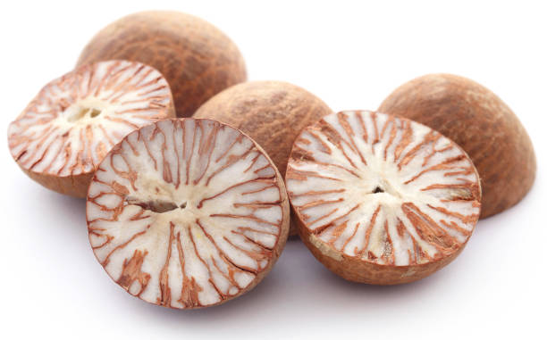
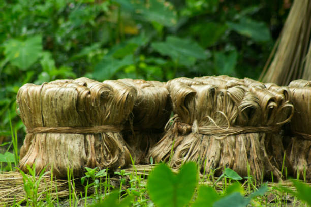
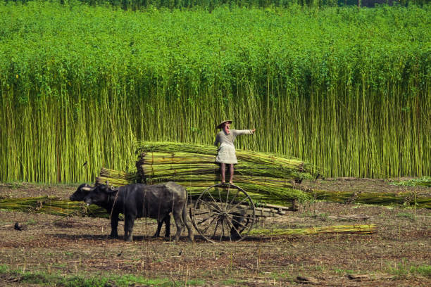

<html lang="en">

</html>

<head>
    <meta charset="UTF-8">
    <meta name="Generator" content="EditPlus®">
    <meta name="Author" content="">
    <meta name="Keywords" content="">
    <meta name="Description" content="">
    <meta name="viewport" content="width=device-width, initial-scale=1.0">
    <title>AD-GROWN</title>
    <style>
        @media (min-width: 1000px) {
            #a {
                display: flex;
            }

            .b {
                width: 280%;
            }

            .c {
                width: 180%;
            }
        }


        /* Style the container for the Google Translate Element */
        #google_translate_element_container {
            position: fixed;
            bottom: 10px;
            right: 10px;
            z-index: 9999;
            transition: box-shadow 0.3s ease;
            /* Add transition for a smoother effect */
        }

        /* Style the Google Translate Element */
        #google_translate_element {
            border: 1px solid rgba(255, 174, 0);
            /* Cyan border color */
            padding: 10px;
            background-color: #f0f8ff;
            /* AliceBlue background color */
            border-radius: 5px;
            box-shadow: 0 0 10px rgba(255, 174, 0);
            /* Initial box-shadow */
        }

        /* Add box-shadow when hovering over the container */
        #google_translate_element_container:hover {
            box-shadow: 0 0 5px rgb(255, 174, 0),
                0 0 25px rgb(255, 174, 0),
                0 0 50px rgb(255, 174, 0);
        }

        @media (max-width: 460px) {
            #imgX {
                height: 200px;
                width: 300px;
            }

        }
    </style>
    <script type="text/javascript"
        src="https://translate.google.com/translate_a/element.js?cb=googleTranslateElementInit"></script>
    <script type="text/javascript">
        function googleTranslateElementInit() {
            new google.translate.TranslateElement({ pageLanguage: 'tel', layout: google.translate.TranslateElement.InlineLayout }, 'google_translate_element');
        }
    </script>
</head>

<body>
    <div id="google_translate_element_container">
        <div id="google_translate_element"></div>
    </div>
    <!--మొక్కజొన్న అని కూడా పిలువబడే మొక్కజొన్న, ప్రపంచంలోని అనేక ప్రాంతాలలో ప్రధానమైన పంట.  మొక్కజొన్న యొక్క పెరుగుతున్న విధానం నాటడం నుండి కోత వరకు అనేక దశలను కలిగి ఉంటుంది.  మొక్కజొన్న సాగు విధానం యొక్క సంక్షిప్త అవలోకనం ఇక్కడ ఉంది:

 నేల తయారీ: 6.0-7.5 pHతో బాగా ఎండిపోయిన నేలలో మొక్కజొన్న బాగా పెరుగుతుంది.  మట్టిని 6-8 అంగుళాల లోతు వరకు దున్నాలి మరియు ఏవైనా కలుపు మొక్కలు లేదా రాళ్లను తొలగించాలి.

 నాటడం: మొక్కజొన్న సాధారణంగా వసంతకాలంలో పండిస్తారు, మంచు ప్రమాదం దాటిన తర్వాత.  విత్తనాలను 1-2 అంగుళాల లోతులో, 30-36 అంగుళాల దూరంలో ఉన్న వరుసలలో నాటాలి.

 అంకురోత్పత్తి: మొక్కజొన్న విత్తనాలు 7-10 రోజులలో మొలకెత్తుతాయి, నేల తేమగా మరియు ఉష్ణోగ్రత తగినంతగా ఉంటే.  విత్తనం ఒక చిన్న రూట్ మరియు రెమ్మను పంపుతుంది, ఇది చివరికి మొక్కజొన్న మొక్కగా పెరుగుతుంది.

 పెరుగుదల: మొక్కజొన్న మొక్క పెరుగుతూనే ఉంటుంది, ఆకులు మరియు కాండాలను అభివృద్ధి చేస్తుంది.  ఇది కూడా tassels మరియు చెవులు ఉత్పత్తి ప్రారంభమవుతుంది.

 పరాగసంపర్కం: మొక్క పైభాగంలో ఉన్న టాసెల్స్‌లో మగ పువ్వులు ఉంటాయి, చెవుల్లో ఆడ పువ్వులు ఉంటాయి.  టసెల్స్ నుండి పుప్పొడి చెవుల పట్టుపై పడినప్పుడు పరాగసంపర్కం జరుగుతుంది.

 చెవి అభివృద్ధి: చెవులు పరాగసంపర్కం జరిగిన తర్వాత, అవి కెర్నలు అభివృద్ధి చెందడం ప్రారంభిస్తాయి.  ప్రతి కెర్నల్ ఒక పట్టుకు జోడించబడి ఉంటుంది, ఇది చివరికి ఎండిపోయి పడిపోతుంది.

 హార్వెస్టింగ్: మొక్కజొన్న సాధారణంగా శరదృతువులో పండిస్తారు, చెవులు పూర్తిగా పరిపక్వం చెందినప్పుడు మరియు కాండాలు మరియు ఆకులు గోధుమ రంగులోకి మారుతాయి.  చెవులను చేతితో లేదా యాంత్రిక హార్వెస్టర్ ఉపయోగించి పండిస్తారు.

 మొత్తంమీద, మొక్కజొన్న సాగు విధానంలో జాగ్రత్తగా నేల తయారీ, సరైన సమయంలో నాటడం మరియు అంకురోత్పత్తి, పెరుగుదల, పరాగసంపర్కం మరియు చెవి అభివృద్ధికి సరైన పరిస్థితులను నిర్ధారించడం వంటివి ఉంటాయి.
jowar
జొన్న అని కూడా పిలువబడే జొన్న, దాని ధాన్యాల కోసం విస్తృతంగా పండించే తృణధాన్యాల పంట. జోవర్ పెరుగుదల ప్రక్రియను అనేక దశలుగా విభజించవచ్చు:

విత్తన ఎంపిక మరియు నాటడం: చేతితో లేదా మెకానికల్ ప్లాంటర్‌ని ఉపయోగించి నాటడానికి అధిక-నాణ్యత గల విత్తనాలను ఎంపిక చేస్తారు. విత్తనాలు బాగా తయారుచేసిన నేలలో, సాధారణంగా వరుసలలో పండిస్తారు.

అంకురోత్పత్తి మరియు మొలక దశ: నాటిన తరువాత, జొన్న గింజలు మొలకెత్తుతాయి మరియు మొలకలుగా పెరుగుతాయి. ఈ దశలో, బలమైన రూట్ వ్యవస్థను ఏర్పాటు చేయడానికి మరియు ఆరోగ్యకరమైన ఆకులను అభివృద్ధి చేయడానికి మొలకలకు తగినంత తేమ, వెచ్చదనం మరియు పోషకాలు అవసరం.

ఏపుగా పెరగడం: జొన్న మొక్కలు మంచి రూట్ వ్యవస్థను ఏర్పాటు చేసుకున్న తర్వాత, అవి ఏపుగా పెరగడంపై దృష్టి పెడతాయి. మొక్కలు పెద్దవిగా పెరుగుతాయి మరియు కిరణజన్య సంయోగక్రియ మరియు ధాన్యం ఉత్పత్తికి ముఖ్యమైన ఆకులు మరియు కొమ్మలను అభివృద్ధి చేస్తాయి. మొక్కలు ఆరోగ్యకరమైన పెరుగుదలను ప్రోత్సహించడానికి క్రమం తప్పకుండా నీటిపారుదల మరియు ఫలదీకరణం చేయబడతాయి.

పుష్పించే మరియు ధాన్యం ఏర్పడటం: దాదాపు 45-60 రోజుల పెరుగుదల తర్వాత, జొన్న మొక్కలు పుష్పాలను ఉత్పత్తి చేయడం ప్రారంభిస్తాయి. పువ్వులు గాలి లేదా స్వీయ-పరాగసంపర్కం ద్వారా పరాగసంపర్కం చేయబడతాయి. పరాగసంపర్కం తరువాత, పువ్వులు ధాన్యాలుగా అభివృద్ధి చెందుతాయి, ఇవి స్పైక్ లాంటి పానికిల్‌లో ఉంటాయి.

ధాన్యం పరిపక్వత మరియు హార్వెస్టింగ్: ధాన్యాలు పరిపక్వం చెందడానికి దాదాపు 90-120 రోజులు పడుతుంది, ఈ సమయంలో పానికిల్ లోపల ధాన్యాలు పెరుగుతాయి మరియు అభివృద్ధి చెందుతాయి. పానికిల్స్ ఆకుపచ్చ నుండి గోధుమ రంగులోకి మారుతాయి, అవి పూర్తిగా పరిపక్వం చెందాయని సూచిస్తున్నాయి. జొన్నను సాధారణంగా మొక్క నుండి కాయలను కత్తిరించి వాటిని నూర్పిడి చేయడం ద్వారా ధాన్యాలను మొక్కల పదార్థం నుండి వేరు చేయడం ద్వారా పండిస్తారు.

పంటకోత తర్వాత ప్రాసెసింగ్: పంట కోసిన తర్వాత, ధాన్యాలను శుభ్రం చేసి, ఏదైనా చెత్త లేదా దెబ్బతిన్న గింజలను తొలగించడానికి క్రమబద్ధీకరించబడతాయి. ధాన్యాలను ఆహారం, పశుగ్రాసం లేదా జీవ ఇంధన ఉత్పత్తికి ఉపయోగించవచ్చు.

మొత్తంమీద, జోవర్ యొక్క పెరుగుదల ఉష్ణోగ్రత, తేమ మరియు సూర్యకాంతి వంటి పర్యావరణ కారకాల సంక్లిష్ట పరస్పర చర్యను కలిగి ఉంటుంది, అలాగే మొక్క యొక్క పెరుగుదల మరియు అభివృద్ధిని నిర్ణయించే జన్యుపరమైన కారకాలు. ఆరోగ్యకరమైన మరియు ఉత్పాదక పంటను నిర్ధారించడానికి తగినంత నీటి నిర్వహణ, పోషకాల నిర్వహణ మరియు తెగులు నియంత్రణ చాలా ముఖ్యమైనవి.
సొర్గుమ్ 
పెడి 
చిల్లి 
మేజ్ -->
    <CENTER>
        <H1><strong>1. ARECANUT / 1.सुपारी</strong></H1>
    </CENTER>
    <center>
        
    </center>
    <DIV id="a" style="color:blue;justify-content:space-evenly;">
        <CENTER>
            <h2 class="notranslate" style="border:3px solid orange; color:BLACK;">
                <CENTER>
                    <h3>ENGLISH</h3>
                </CENTER>
                Arecanut, commonly known as betel nut, is a significant cash crop in India, particularly in states like
                Karnataka, Kerala, and Assam. It is cultivated for its seeds, which are widely used for chewing. Below
                is the step-by-step growing mechanism for arecanut from seed selection to harvesting:<br><br>

                1] <U>Seed Selection and Planting:</U> <br>
                Arecanut is typically propagated through seeds or by planting seedlings. High-quality, disease-free
                seeds are selected for planting. Seeds should be soaked in water for 24 hours before planting to enhance
                germination. The planting season usually begins at the onset of the monsoon (June-July). Seeds are sown
                in well-prepared soil, usually in pits or trenches, spaced 6-8 feet apart.<br><br>

                2] <U>Germination:</U> <br>
                After sowing, arecanut seeds take about 3 to 4 months to germinate, depending on soil conditions and
                moisture levels. The germination process involves the seed absorbing moisture, swelling, and eventually
                sprouting a seedling that pushes through the soil.<br><br>

                3] <U>Seedling Development:</U> <br>
                Once germinated, seedlings develop their first few leaves. Arecanut plants thrive in warm, humid
                conditions with ample sunlight. During this stage, it is crucial to maintain moisture in the soil,
                especially during dry spells.<br><br>

                4] <U>Transplanting (if applicable):</U> <br>
                If started in a nursery, seedlings can be transplanted to the main field when they reach about 6-12
                months old. This is done carefully to avoid damaging the roots. The transplanting is typically done
                during the rainy season to ensure adequate moisture.<br><br>

                5] <U>Vegetative Growth:</U> <br>
                After transplanting, the arecanut plant undergoes rapid vegetative growth. The plant grows tall,
                producing large, feathery leaves that can reach up to 10 feet in height. Proper spacing and soil
                management are essential during this stage to allow for good airflow and sunlight penetration.<br><br>

                6] <U>Flowering:</U> <br>
                Arecanut plants start to flower after about 4-5 years of growth. The flowers are small and grow in
                clusters. Arecanut is dioecious, meaning there are male and female plants. Only the female plants
                produce the fruit, so it is essential to have both male and female plants in proximity to ensure
                pollination.<br><br>

                7] <U>Pollination:</U> <br>
                Pollination in arecanut occurs through wind and insects. The pollen from the male flowers fertilizes the
                female flowers, leading to fruit development. Adequate planting of male plants is crucial for maximizing
                fruit yield.<br><br>

                8] <U>Fruit Development:</U> <br>
                Once pollinated, the flowers develop into fruits, which are green drupes that turn yellowish-brown as
                they mature. This stage typically lasts around 7-9 months. The fruits develop in clusters, and each
                cluster can contain several nuts.<br><br>

                9] <U>Pest and Disease Management:</U> <br>
                Arecanut is susceptible to pests such as leafhoppers and diseases like bud rot. Regular monitoring and
                the application of organic pesticides, such as neem oil, can help manage these issues. Implementing good
                agricultural practices, such as crop rotation and maintaining plant health, also reduces the risk of
                pest infestations.<br><br>

                10] <U>Harvesting:</U> <br>
                Arecanut is harvested when the fruits turn yellow-brown and begin to dry. This usually occurs about 6-8
                months after pollination. Harvesting is done manually by cutting the fruit bunches from the plant. It is
                essential to wear gloves during harvesting, as the fruit can be irritating to the skin.<br><br>

                11] <U>Post-Harvest Processing:</U> <br>
                After harvesting, the arecanuts are cleaned and dried in the sun for several days to reduce moisture
                content. Proper drying is crucial to prevent mold and maintain quality. Dried arecanuts are sorted based
                on size and quality before being packaged for sale.<br><br>

                12] <U>Storage:</U> <br>
                Arecanuts should be stored in a cool, dry place to prevent moisture absorption and pest attacks. Proper
                storage conditions help maintain the nuts' quality for longer periods.<br><br>

                Throughout the growth process, arecanut plants require well-drained, fertile soil, adequate moisture,
                and careful pest management to ensure a healthy yield.
            </h2>
        </CENTER>
        <div class="b" id="translateThisSection" style="color:blACK; text-align:center;">
            <center>
                <h3 style="border:3px solid orange; color:BLACK;">
                    <CENTER>
                        <h1>हिंदी</h1>
                    </CENTER>
                    सुपारी, जिसे आमतौर पर सुपारी के रूप में जाना जाता है, भारत में एक महत्वपूर्ण नकदी फसल है, खासकर
                    कर्नाटक, केरल और असम जैसे राज्यों में। इसकी खेती इसके बीजों के लिए की जाती है, जिनका उपयोग व्यापक
                    रूप से चबाने के लिए किया जाता है। बीज चयन से लेकर कटाई तक सुपारी की चरण-दर-चरण खेती की विधि नीचे दी
                    गई है:<br><br>

                    1] <U> बीज का चयन और रोपण:</U> <br> सुपारी को आमतौर पर बीज के माध्यम से या पौधे रोपकर प्रचारित किया
                    जाता है। रोपण के लिए उच्च गुणवत्ता वाले, रोग-मुक्त बीजों का चयन किया जाता है। अंकुरण बढ़ाने के लिए
                    बीज को बोने से पहले 24 घंटे तक पानी में भिगोना चाहिए। रोपण का मौसम आमतौर पर मानसून की शुरुआत
                    (जून-जुलाई) में शुरू होता है। बीज अच्छी तरह से तैयार मिट्टी में बोए जाते हैं, आमतौर पर गड्ढों या
                    खाइयों में, 6-8 फीट की दूरी पर।<br><br>

                    2] <U>अंकुरण: </U> <br>बुआई के बाद, मिट्टी की स्थिति और नमी के स्तर के आधार पर, सुपारी के बीज को
                    अंकुरित होने में लगभग 3 से 4 महीने लगते हैं। अंकुरण प्रक्रिया में बीज नमी को अवशोषित करना, सूजन करना
                    और अंततः एक अंकुर को अंकुरित करना शामिल है जो मिट्टी के माध्यम से आगे बढ़ता है।<br><br>

                    3] <U> अंकुर विकास:</U> <br> एक बार अंकुरित होने के बाद, अंकुर अपनी पहली कुछ पत्तियाँ विकसित करते
                    हैं। सुपारी के पौधे पर्याप्त धूप के साथ गर्म, आर्द्र परिस्थितियों में पनपते हैं। इस चरण के दौरान,
                    मिट्टी में नमी बनाए रखना महत्वपूर्ण है, खासकर सूखे के दौरान।<br><br>

                    4] <U> रोपाई (यदि लागू हो):</U> <br> यदि नर्सरी में शुरू किया गया है, तो लगभग 6-12 महीने की उम्र तक
                    पहुंचने पर पौधों को मुख्य खेत में प्रत्यारोपित किया जा सकता है। जड़ों को नुकसान पहुंचाने से बचने के
                    लिए यह सावधानी से किया जाता है। पर्याप्त नमी सुनिश्चित करने के लिए रोपाई आमतौर पर बरसात के मौसम में
                    की जाती है।<br><br>

                    5] <U> वानस्पतिक विकास:</U> <br> रोपाई के बाद, सुपारी के पौधे में तेजी से वानस्पतिक विकास होता है।
                    पौधा लंबा होता है, जिससे बड़े, पंखदार पत्ते निकलते हैं जिनकी ऊंचाई 10 फीट तक हो सकती है। इस चरण के
                    दौरान अच्छे वायु प्रवाह और सूर्य के प्रकाश के प्रवेश के लिए उचित दूरी और मिट्टी प्रबंधन आवश्यक
                    है।<br><br>

                    6] <U> फूल आना:</U> <br> सुपारी के पौधों में लगभग 4-5 साल के विकास के बाद फूल आना शुरू हो जाते हैं।
                    फूल छोटे होते हैं और गुच्छों में उगते हैं। सुपारी द्विअर्थी है, अर्थात इसमें नर और मादा पौधे होते
                    हैं। केवल मादा पौधे ही फल पैदा करते हैं, इसलिए परागण सुनिश्चित करने के लिए नर और मादा दोनों पौधों का
                    पास-पास होना आवश्यक है।<br><br>

                    7] <U> परागण: </U> <br>सुपारी में परागण हवा और कीड़ों के माध्यम से होता है। नर फूलों के परागकण मादा
                    फूलों को निषेचित करते हैं, जिससे फलों का विकास होता है। फलों की अधिकतम पैदावार के लिए नर पौधों का
                    पर्याप्त रोपण महत्वपूर्ण है।<br><br>

                    8] <U> फलों का विकास: </U> <br>परागण के बाद, फूल फलों में विकसित होते हैं, जो हरे ड्रूप होते हैं जो
                    परिपक्व होने पर पीले-भूरे रंग में बदल जाते हैं। यह अवस्था आमतौर पर लगभग 7-9 महीने तक रहती है। फल
                    गुच्छों में विकसित होते हैं, और प्रत्येक गुच्छे में कई मेवे हो सकते हैं।<br><br>

                    9] <U> कीट और रोग प्रबंधन: </U> <br>सुपारी लीफहॉपर जैसे कीटों और कली सड़न जैसी बीमारियों के प्रति
                    संवेदनशील है। नियमित निगरानी और नीम के तेल जैसे जैविक कीटनाशकों के प्रयोग से इन मुद्दों को प्रबंधित
                    करने में मदद मिल सकती है। फसल चक्रण और पौधों के स्वास्थ्य को बनाए रखने जैसी अच्छी कृषि पद्धतियों को
                    लागू करने से भी कीटों के संक्रमण का खतरा कम हो जाता है।<br><br>

                    10] <U>कटाई:</U> <br>सुपारी की कटाई तब की जाती है जब फल पीले-भूरे रंग के हो जाते हैं और सूखने लगते
                    हैं। यह आमतौर पर परागण के लगभग 6-8 महीने बाद होता है। पौधों से फलों के गुच्छों को काटकर हाथ से कटाई
                    की जाती है। कटाई के दौरान दस्ताने पहनना आवश्यक है, क्योंकि फल त्वचा को परेशान कर सकते हैं।<br><br>

                    11] <U>कटाई के बाद की प्रक्रिया:</U> <br>कटाई के बाद, नमी की मात्रा को कम करने के लिए सुपारी को साफ
                    किया जाता है और कई दिनों तक धूप में सुखाया जाता है। फफूंदी को रोकने और गुणवत्ता बनाए रखने के लिए
                    उचित सुखाने महत्वपूर्ण है। बिक्री के लिए पैक किए जाने से पहले सूखे सुपारी को आकार और गुणवत्ता के
                    आधार पर क्रमबद्ध किया जाता है।<br><br>

                    12] <U>भंडारण:</U> <br>नमी के अवशोषण और कीटों के हमले को रोकने के लिए सुपारी को ठंडी, सूखी जगह पर
                    संग्रहित किया जाना चाहिए। उचित भंडारण की स्थिति लंबे समय तक नट्स की गुणवत्ता बनाए रखने में मदद करती
                    है।<br><br>

                    विकास प्रक्रिया के दौरान, स्वस्थ उपज सुनिश्चित करने के लिए सुपारी के पौधों को अच्छी जल निकासी वाली,
                    उपजाऊ मिट्टी, पर्याप्त नमी और सावधानीपूर्वक कीट प्रबंधन की आवश्यकता होती है।
                </h3>
            </center>
            <audio controls src="TELANGANA/TP AUDIO\jowar.m4a"></audio>
            <h2>सुनना</h2>
        </div>
    </DIV>

    <CENTER>
        <H1><strong>2.BAMBOO / 2.बांस</strong></H1>
    </CENTER>
    <center>
        
    </center>

    <DIV id="a" style="color:blue;  justify-content:space-evenly;">
        <CENTER>
            <h2 class="notranslate" style="border:3px solid orange; color:BLACK;">
                <CENTER>
                    <h3>ENGLISH</h3>
                </CENTER>
                Bamboo is a versatile and fast-growing plant known for its strength and flexibility. It is used in
                various applications, from construction to crafts. Here’s a step-by-step guide on the growing mechanism
                of bamboo from selection to harvesting:<br><br>

                1] <U>Species Selection: </U><br> Choose the right species of bamboo based on local climate and intended
                use. Common species include Bambusa vulgaris, Dendrocalamus giganteus, and Phyllostachys spp. Selecting
                a species that thrives in your region is crucial for successful growth.<br><br>

                2] <U>Site Preparation: </U><br> Select a site with well-drained soil and adequate sunlight. Bamboo
                prefers slightly acidic to neutral pH (around 6 to 7). Clear the area of weeds and debris, and till the
                soil to improve aeration and drainage.<br><br>

                3] <U>Planting: </U><br> Bamboo can be propagated from seeds, rhizomes, or culms. For rhizome planting,
                dig holes about 30-50 cm deep and place the rhizomes horizontally. Space them 1-3 meters apart,
                depending on the species. If planting seedlings or culms, plant them upright and ensure they are
                well-watered.<br><br>

                4] <U>Watering: </U><br> After planting, water the bamboo thoroughly to help settle the soil around the
                roots. Bamboo requires consistent moisture, especially during the first year. Regular watering is
                essential, particularly in dry periods.<br><br>

                5] <U>Establishment:</U><br> Bamboo will focus on establishing its root system during the first growing
                season. This period can last from 6 months to 2 years, depending on the species and environmental
                conditions. During this time, limit disturbances around the plants.<br><br>

                6] <U>Growth Phase:</U><br> Once established, bamboo can grow rapidly, with some species reaching
                heights of up to 1 meter per day. Growth occurs mainly during the warm months, and bamboo will produce
                new shoots from the rhizome network. Nutrient management is crucial; applying balanced fertilizers can
                promote healthy growth.<br><br>

                7] <U>Leaf Development: </U><br> Bamboo leaves play a vital role in photosynthesis, providing energy for
                growth. Healthy leaves should be lush and green. Pruning dead or damaged leaves can help improve air
                circulation and light penetration.<br><br>

                8] <U>Pest and Disease Management: </U><br> Bamboo can be affected by pests like aphids, mealybugs, and
                borers, as well as diseases such as fungal infections. Regular monitoring is essential. Organic pest
                control methods, such as neem oil or insecticidal soaps, can effectively manage infestations.<br><br>

                9] <U>Maturity: </U><br> Bamboo typically reaches maturity within 3-5 years, depending on the species.
                Mature bamboo can withstand harsher conditions and may produce larger culms. During this phase, focus on
                maintaining healthy growth through proper watering and fertilization.<br><br>

                10] <U>Harvesting: </U><br> Bamboo is harvested for various uses, including construction, furniture, and
                crafts. Harvesting is usually done when the culms are 3-5 years old for optimal strength. Cut the culms
                at ground level, ensuring not to damage surrounding plants.<br><br>

                11] <U>Post-Harvest Processing: </U><br> After harvesting, bamboo should be treated to prevent pests and
                decay. Common methods include air-drying, boiling in water, or using preservatives like borax. Proper
                treatment extends the lifespan of bamboo products.<br><br>

                12] <U>Regeneration and Maintenance: </U><br> Bamboo is a renewable resource, and with proper care, it
                can regrow after harvesting. Monitor the growth of new shoots and manage the density of the bamboo grove
                to prevent overcrowding. Regularly removing weak or damaged culms can promote overall health.<br><br>

                Throughout the growing cycle, bamboo is a resilient plant that requires proper care and management to
                ensure successful growth and sustainable harvesting. Its rapid growth and versatility make it an
                important resource in various industries.
            </h2>
        </CENTER>
        <div class="b" id="translateThisSection" style="color:blACK;   text-align:center;float:right;">
            <center>
                <h3 style="border:3px solid orange; color:BLACK;">
                    <CENTER>
                        <h1>हिंदी</h1>
                    </CENTER>
                    बांस एक बहुमुखी और तेजी से बढ़ने वाला पौधा है जो अपनी ताकत और लचीलेपन के लिए जाना जाता है। इसका उपयोग निर्माण से लेकर शिल्प तक विभिन्न अनुप्रयोगों में किया जाता है। यहां चयन से लेकर कटाई तक बांस की बढ़ती प्रक्रिया पर चरण-दर-चरण मार्गदर्शिका दी गई है:<br><br>

                    1] <U>प्रजाति चयन: </U><br> स्थानीय जलवायु और इच्छित उपयोग के आधार पर बांस की सही प्रजाति चुनें। सामान्य प्रजातियों में बम्बुसा वल्गेरिस, डेंड्रोकैलामस गिगेंटस, और फाइलोस्टैचिस एसपीपी शामिल हैं। आपके क्षेत्र में पनपने वाली प्रजाति का चयन सफल विकास के लिए महत्वपूर्ण है।<br><br>
    
                    2] <U>साइट की तैयारी: </U><br> अच्छी जल निकासी वाली मिट्टी और पर्याप्त धूप वाली साइट का चयन करें। बांस तटस्थ पीएच (लगभग 6 से 7) की तुलना में थोड़ा अम्लीय पसंद करता है। खरपतवार और मलबे के क्षेत्र को साफ़ करें, और वातन और जल निकासी में सुधार के लिए मिट्टी को जोतें।<br><br>
    
                    3] <U>रोपण: </U><br> बांस को बीज, प्रकंद या डंठल से प्रवर्धित किया जा सकता है। प्रकंद रोपण के लिए, लगभग 30-50 सेमी गहरा गड्ढा खोदें और प्रकंदों को क्षैतिज रूप से रखें। प्रजातियों के आधार पर, उन्हें 1-3 मीटर की दूरी पर रखें। यदि पौधे या कलियाँ लगा रहे हैं, तो उन्हें सीधा रोपें और सुनिश्चित करें कि उनमें अच्छी तरह से पानी हो।<br><br>
    
                    4] <U>पानी देना: </U><br> रोपण के बाद, जड़ों के आसपास की मिट्टी को व्यवस्थित करने में मदद करने के लिए बांस को अच्छी तरह से पानी दें। बांस को लगातार नमी की आवश्यकता होती है, खासकर पहले वर्ष के दौरान। नियमित रूप से पानी देना आवश्यक है, विशेषकर शुष्क अवधि में।<br><br>
    
                    5] <U>स्थापना:</U><br> बांस पहले बढ़ते मौसम के दौरान अपनी जड़ प्रणाली स्थापित करने पर ध्यान केंद्रित करेगा। प्रजातियों और पर्यावरणीय परिस्थितियों के आधार पर यह अवधि 6 महीने से 2 साल तक रह सकती है। इस दौरान, पौधों के आसपास गड़बड़ी को सीमित करें।<br><br>
    
                    6] <U>विकास चरण:</U><br> एक बार स्थापित होने के बाद, बांस तेजी से बढ़ सकता है, कुछ प्रजातियां प्रति दिन 1 मीटर तक की ऊंचाई तक पहुंचती हैं। विकास मुख्य रूप से गर्म महीनों के दौरान होता है, और बांस प्रकंद नेटवर्क से नए अंकुर पैदा करेगा। पोषक तत्व प्रबंधन महत्वपूर्ण है; संतुलित उर्वरक लगाने से स्वस्थ विकास को बढ़ावा मिल सकता है।<br><br>
    
                    7] <U>पत्ती विकास: </U><br> बांस की पत्तियां प्रकाश संश्लेषण में महत्वपूर्ण भूमिका निभाती हैं, विकास के लिए ऊर्जा प्रदान करती हैं। स्वस्थ पत्तियाँ हरी-भरी होनी चाहिए। मृत या क्षतिग्रस्त पत्तियों को काटने से वायु परिसंचरण और प्रकाश प्रवेश को बेहतर बनाने में मदद मिल सकती है।<br><br>
    
                    8] <U>कीट और रोग प्रबंधन: </U><br> बांस एफिड्स, माइलबग्स और बोरर्स जैसे कीटों के साथ-साथ फंगल संक्रमण जैसी बीमारियों से प्रभावित हो सकता है। नियमित निगरानी जरूरी है. जैविक कीट नियंत्रण विधियाँ, जैसे कि नीम का तेल या कीटनाशक साबुन, संक्रमण को प्रभावी ढंग से प्रबंधित कर सकते हैं।<br><br>
    
                    9] <U>परिपक्वता: </U><br> प्रजाति के आधार पर बांस आमतौर पर 3-5 साल के भीतर परिपक्वता तक पहुंच जाता है। परिपक्व बांस कठोर परिस्थितियों का सामना कर सकता है और बड़ी कलियाँ पैदा कर सकता है। इस चरण के दौरान, उचित पानी और निषेचन के माध्यम से स्वस्थ विकास बनाए रखने पर ध्यान केंद्रित करें।<br><br>
    
                    10] <U>कटाई: </U><br> बांस की कटाई निर्माण, फर्नीचर और शिल्प सहित विभिन्न उपयोगों के लिए की जाती है। इष्टतम मजबूती के लिए कटाई आमतौर पर तब की जाती है जब कल्म 3-5 वर्ष पुराने हो जाते हैं। आसपास के पौधों को नुकसान न पहुंचे, यह सुनिश्चित करते हुए कलम्स को जमीनी स्तर पर काटें।<br><br>
    
                    11] <U>फसल के बाद प्रसंस्करण: </U><br> कटाई के बाद, कीटों और क्षय को रोकने के लिए बांस का उपचार किया जाना चाहिए। सामान्य तरीकों में हवा में सुखाना, पानी में उबालना या बोरेक्स जैसे परिरक्षकों का उपयोग करना शामिल है। उचित उपचार से बांस उत्पादों का जीवनकाल बढ़ जाता है।<br><br>
    
                    12] <U>पुनर्जनन और रखरखाव: </U><br> बांस एक नवीकरणीय संसाधन है, और उचित देखभाल के साथ, यह कटाई के बाद फिर से उग सकता है। नई कोपलों के विकास की निगरानी करें और भीड़भाड़ को रोकने के लिए बांस के बगीचे के घनत्व का प्रबंधन करें। कमजोर या क्षतिग्रस्त कलियों को नियमित रूप से हटाने से समग्र स्वास्थ्य को बढ़ावा मिल सकता है।<br><br>
    
                    बढ़ते चक्र के दौरान, बांस एक लचीला पौधा है जिसे सफल विकास और टिकाऊ कटाई सुनिश्चित करने के लिए उचित देखभाल और प्रबंधन की आवश्यकता होती है। इसकी तीव्र वृद्धि और बहुमुखी प्रतिभा इसे विभिन्न उद्योगों में एक महत्वपूर्ण संसाधन बनाती है।
                </h3>
            </center>
            <audio controls src="TELANGANA/TP AUDIO\paddy.m4a"></audio>
            <h2>सुनना</h2>
        </div>
    </DIV>

    <CENTER>
        <H1><strong>3. COTTON / 3.कपास</strong></H1>
    </CENTER>
    <center>
        
    </center>
    <DIV id="a" style="color:blue; justify-content:space-evenly;">
        <CENTER>
            <h2 class="notranslate" style="border:3px solid orange; color:BLACK;">
                <CENTER>
                    <h3>ENGLISH</h3>
                </CENTER>
                Cotton is a crucial cash crop in India, known for its fibers used in textiles. Here’s a detailed
                step-by-step mechanism for growing cotton from seed selection to harvesting:<br><br>

                1] <U>Seed Selection and Sowing:</U> <br>
                Begin by selecting high-quality, certified cotton seeds that are disease-resistant and suited to your
                region's climate. Cotton is typically sown in the kharif season (April to June). Seeds should be planted
                1-2 inches deep in well-drained, fertile soil, with rows spaced 75-90 cm apart.<br><br>

                2] <U>Germination:</U> <br>
                After sowing, cotton seeds absorb moisture and begin to swell. The radicle (embryonic root) emerges
                first, followed by the shoot. Germination usually occurs within 7-10 days under optimal soil
                temperatures of 20°C to 30°C.<br><br>

                3] <U>Vegetative Growth:</U> <br>
                Once germinated, the cotton plant enters the vegetative growth phase. The plant develops a sturdy stem
                and broad leaves. Adequate sunlight and water are essential during this phase for healthy growth, as
                cotton plants can reach heights of 1-2 meters.<br><br>

                4] <U>Flowering:</U> <br>
                Approximately 50-60 days after sowing, cotton plants start to flower. The flowers are initially white
                and then turn pink before falling off, leading to the formation of cotton bolls. This phase is critical
                for pollination, which primarily occurs through wind and insects.<br><br>

                5] <U>Pod (Boll) Formation:</U> <br>
                After flowering, cotton bolls begin to develop, usually 70-90 days after sowing. Each boll can contain
                several seeds surrounded by soft fibers. During this stage, maintaining proper moisture levels is
                essential for the healthy development of the bolls.<br><br>

                6] <U>Pest and Disease Management:</U> <br>
                Cotton is susceptible to pests like cotton bollworm, aphids, and diseases such as wilt and root rot.
                Implement integrated pest management (IPM) strategies, including crop rotation, biological control, and
                the use of resistant varieties. Regular monitoring and timely application of organic pesticides like
                neem oil can help manage pest populations effectively.<br><br>

                7] <U>Seed Development:</U> <br>
                As the bolls mature, the seeds inside grow, and the fibers expand. This maturation process lasts about
                30-40 days, during which the bolls will open when ready, revealing the fluffy cotton fibers. It’s
                crucial to monitor the moisture content to prevent diseases.<br><br>

                8] <U>Harvesting:</U> <br>
                Cotton is typically ready for harvest 150-180 days after sowing, indicated by the opening of the bolls
                and the fluffy cotton fibers becoming visible. Harvesting can be done manually or with mechanized
                equipment. Timely harvesting is important to prevent losses from shattering or degradation.<br><br>

                9] <U>Post-Harvest Processing:</U> <br>
                After harvesting, cotton needs to be ginned to separate the fibers from the seeds. The cotton fibers are
                cleaned and pressed into bales, while the seeds can be processed for oil extraction or used for
                planting.After harvesting, cotton needs to be ginned to separate the fibers from the seeds. The cotton
                fibers are cleaned and pressed into bales, while the seeds can be processed for oil extraction or used
                for planting.<br><br>

                10] <U>Pest Control in Storage:</U> <br>
                To protect stored cotton fibers from pests like weevils, ensure they are stored in well-ventilated, dry
                conditions. Using natural repellents such as dried neem leaves or mothballs can help deter pests during
                storage.<br><br>

                Throughout its growth cycle, cotton requires well-drained soil, adequate moisture, and effective pest
                management to ensure a healthy and productive harvest.
            </h2>
        </CENTER>
        <div class="b" id="translateThisSection" style="color:blACK;   text-align:center;float:right;">
            <center>
                <h3 style="border:3px solid orange; color:BLACK;">
                    <CENTER>
                        <h1>हिंदी</h1>
                    </CENTER>
                    कपास भारत में एक महत्वपूर्ण नकदी फसल है, जो वस्त्रों में उपयोग होने वाले रेशों के लिए जानी जाती है।
                    बीज चयन से लेकर कटाई तक कपास उगाने के लिए यहां एक विस्तृत चरण-दर-चरण तंत्र दिया गया है:<br><br>

                    1] <U>बीज का चयन और बुआई: </U> <br>उच्च गुणवत्ता वाले, प्रमाणित कपास के बीजों का चयन करके शुरुआत
                    करें जो रोग प्रतिरोधी हों और आपके क्षेत्र की जलवायु के अनुकूल हों। कपास आमतौर पर ख़रीफ़ सीज़न
                    (अप्रैल से जून) में बोया जाता है। बीजों को अच्छी जल निकासी वाली, उपजाऊ मिट्टी में 1-2 इंच गहराई में,
                    कतारों में 75-90 सेमी की दूरी पर रोपना चाहिए।<br><br>

                    2] <U>अंकुरण: </U> <br>बुआई के बाद कपास के बीज नमी सोख लेते हैं और फूलने लगते हैं। मूलांकुर (भ्रूण
                    जड़) पहले निकलता है, उसके बाद अंकुर निकलता है। अंकुरण आमतौर पर 20 डिग्री सेल्सियस से 30 डिग्री
                    सेल्सियस के इष्टतम मिट्टी के तापमान पर 7-10 दिनों के भीतर होता है।<br><br>

                    3] <U>वानस्पतिक विकास: </U> <br>एक बार अंकुरित होने के बाद, कपास का पौधा वानस्पतिक विकास चरण में
                    प्रवेश करता है। पौधे में एक मजबूत तना और चौड़ी पत्तियाँ विकसित होती हैं। स्वस्थ विकास के लिए इस चरण
                    के दौरान पर्याप्त धूप और पानी आवश्यक है, क्योंकि कपास के पौधे 1-2 मीटर की ऊंचाई तक पहुंच सकते
                    हैं।<br><br>

                    4] <U>फूल आना: </U> <br>बुआई के लगभग 50-60 दिन बाद कपास के पौधों में फूल आना शुरू हो जाते हैं। फूल
                    शुरू में सफेद होते हैं और फिर गिरने से पहले गुलाबी हो जाते हैं, जिससे कपास के बीजकोष बनते हैं। यह
                    चरण परागण के लिए महत्वपूर्ण है, जो मुख्य रूप से हवा और कीड़ों के माध्यम से होता है।<br><br>

                    5] <U>फली (बॉल) का निर्माण: </U> <br>फूल आने के बाद, कपास के बॉल्स विकसित होने लगते हैं, आमतौर पर
                    बुआई के 70-90 दिन बाद। प्रत्येक बीजकोष में मुलायम रेशों से घिरे कई बीज हो सकते हैं। इस चरण के दौरान,
                    बीजकोषों के स्वस्थ विकास के लिए उचित नमी का स्तर बनाए रखना आवश्यक है।<br><br>

                    6] <U>कीट और रोग प्रबंधन: </U> <br>कपास सूंडी, एफिड जैसे कीटों और उकठा और जड़ सड़न जैसी बीमारियों के
                    प्रति संवेदनशील है। फसल चक्र, जैविक नियंत्रण और प्रतिरोधी किस्मों के उपयोग सहित एकीकृत कीट प्रबंधन
                    (आईपीएम) रणनीतियों को लागू करें। नीम के तेल जैसे जैविक कीटनाशकों की नियमित निगरानी और समय पर प्रयोग
                    से कीटों की आबादी को प्रभावी ढंग से प्रबंधित करने में मदद मिल सकती है।<br><br>

                    7] <U>बीज विकास: </U> <br>जैसे-जैसे बीजकोष परिपक्व होते हैं, अंदर के बीज बढ़ते हैं, और रेशे फैलते
                    हैं। यह परिपक्वता प्रक्रिया लगभग 30-40 दिनों तक चलती है, जिसके दौरान तैयार होने पर बीजकोष खुल जाएंगे
                    और फूले हुए कपास के रेशे दिखाई देंगे। बीमारियों से बचाव के लिए नमी की मात्रा की निगरानी करना
                    महत्वपूर्ण है।<br><br>

                    8] <U>कटाई: </U> <br>कपास आम तौर पर बुआई के 150-180 दिनों के बाद कटाई के लिए तैयार हो जाती है, जिसका
                    संकेत बीजकोषों के खुलने और फूले हुए कपास के रेशों के दिखाई देने से होता है। कटाई मैन्युअल रूप से या
                    मशीनीकृत उपकरणों से की जा सकती है। नुकसान को टूटने या खराब होने से बचाने के लिए समय पर कटाई
                    महत्वपूर्ण है।<br><br>

                    9] <U>कटाई के बाद का प्रसंस्करण: </U> <br>कटाई के बाद, बीज से रेशों को अलग करने के लिए कपास को पीसना
                    पड़ता है। कपास के रेशों को साफ किया जाता है और गांठों में दबाया जाता है, जबकि बीजों को तेल निकालने
                    के लिए संसाधित किया जा सकता है या रोपण के लिए उपयोग किया जा सकता है।<br><br>

                    10] <U>भंडारण में कीट नियंत्रण: </U> <br>संग्रहित कपास के रेशों को घुन जैसे कीटों से बचाने के लिए,
                    सुनिश्चित करें कि उन्हें अच्छी तरह हवादार, शुष्क परिस्थितियों में संग्रहित किया जाए। सूखे नीम के
                    पत्तों या मोथबॉल जैसे प्राकृतिक विकर्षक का उपयोग करने से भंडारण के दौरान कीटों को रोकने में मदद मिल
                    सकती है।<br><br>

                    अपने विकास चक्र के दौरान, कपास को स्वस्थ और उत्पादक फसल सुनिश्चित करने के लिए अच्छी जल निकासी वाली
                    मिट्टी, पर्याप्त नमी और प्रभावी कीट प्रबंधन की आवश्यकता होती है।
                </h3>
            </center>
            <audio controls src="TELANGANA/TP AUDIO\cotton.m4a"></audio>
            <h2>सुनना</h2>
        </div>
    </DIV>

    <CENTER>
        <H1><strong>4.SUGARCANE / 4.गन्ना</strong></H1>
    </CENTER>
    <center>
        
    </center>
    <DIV id="a" style="color:blue;  justify-content:space-evenly;">
        <CENTER>
            <h2 class="notranslate" style="border:3px solid orange; color:BLACK;">
                <CENTER>
                    <h3>ENGLISH</h3>
                </CENTER>
                Sugarcane is a vital cash crop in India, known for its high sugar content and use in various products.
                Here’s a detailed step-by-step mechanism for growing sugarcane from seed selection to
                harvesting:<br><br>

                1] <U>Seed Selection and Preparation:</U> <br>
                Choose high-quality sugarcane seeds, typically in the form of setts (pieces of cane). The setts should
                be disease-free and preferably sourced from certified nurseries. Prior to planting, cut the canes into
                30-40 cm pieces with at least one bud on each sett, and treat them with fungicides to prevent
                diseases.<br><br>

                2] <U>Land Preparation:</U> <br>
                Prepare the land by plowing and leveling the field to ensure good drainage. Incorporate organic matter
                and fertilizers into the soil to enhance fertility. Sugarcane thrives best in well-drained, fertile
                soils with a pH of 6-8.<br><br>

                3] <U>Sowing:</U> <br>
                Sugarcane is typically planted at the beginning of the monsoon season (May to June). Setts should be
                planted 10-15 cm deep in rows spaced 75-100 cm apart. The buds should be facing upwards for optimal
                growth.<br><br>

                4] <U>Germination:</U> <br>
                After planting, sugarcane setts absorb moisture from the soil, initiating sprouting. Buds begin to
                germinate within 10-14 days, leading to the emergence of shoots. Proper moisture levels are essential
                during this phase.<br><br>

                5] <U>Vegetative Growth:</U> <br>
                Once germinated, the sugarcane plant enters a vigorous vegetative growth phase. It develops tall,
                jointed stems and leaves. Adequate sunlight, water, and nutrient availability are critical for robust
                growth. The vegetative phase lasts around 8-10 months.<br><br>

                6] <U>Stooling:</U> <br>
                As the plant matures, it begins to produce tillers (side shoots), known as stooling. This process
                increases the number of stems per plant and enhances yield potential. Maintaining proper moisture and
                nutrients during this phase is crucial.<br><br>

                7] <U>Flowering:</U> <br>
                Sugarcane may flower after about 10-12 months, depending on the variety and environmental conditions.
                Flowering is less important for sugar production but can indicate the maturity of the crop. The
                flowering stage is characterized by the formation of panicles at the top of the cane.<br><br>

                8] <U>Sugar Accumulation:</U> <br>
                After flowering, the plant enters a phase where sugars are accumulated in the stalks. This period is
                crucial for maximizing sugar content, and it typically lasts for several weeks. Adequate sunlight and
                water management are vital during this time.<br><br>

                9] <U>Pest and Disease Management:</U> <br>
                Sugarcane is susceptible to pests like sugarcane borers, aphids, and diseases such as smut and mosaic
                virus. Implement integrated pest management (IPM) strategies, including crop rotation, biological
                control, and timely application of organic pesticides.<br><br>

                10] <U>Harvesting:</U> <br>
                Sugarcane is ready for harvest 12-18 months after planting, indicated by the drying of leaves and a
                change in stalk color. Harvesting can be done manually or mechanically. It’s crucial to harvest at the
                right time to prevent losses from drying and pests.<br><br>

                11] <U>Post-Harvest Processing: </U> <br>
                After harvesting, sugarcane should be processed quickly to extract juice, which can be converted into
                sugar or molasses. The stalks can also be used for other products, like biofuels or animal feed.<br><br>

                12] <U>Pest Control in Storage:</U> <br>
                To protect stored sugarcane from pests like weevils, ensure proper storage conditions, preferably in
                cool and dry environments. Using natural repellents can help deter pests during storage.<br><br>

                Throughout its growth cycle, sugarcane requires well-drained soil, consistent moisture, and effective
                pest management to achieve a healthy and productive harvest.
            </h2>
        </CENTER>
        <div class="b" id="translateThisSection" style="color:blACK;   text-align:center;float:right;">
            <center>
                <h3 style="border:3px solid orange; color:BLACK;">
                    <CENTER>
                        <h1>हिंदी</h1>
                    </CENTER>
                    गन्ना भारत में एक महत्वपूर्ण नकदी फसल है, जो अपनी उच्च चीनी सामग्री और विभिन्न उत्पादों में उपयोग के
                    लिए जाना जाता है। बीज चयन से लेकर कटाई तक गन्ना उगाने के लिए यहां एक विस्तृत चरण-दर-चरण तंत्र दिया
                    गया है:<br><br>

                    1] <U>बीज का चयन और तैयारी: </U> <br>उच्च गुणवत्ता वाले गन्ने के बीज चुनें, आमतौर पर सेट (गन्ना के
                    टुकड़े) के रूप में। सेट रोग-मुक्त होने चाहिए और अधिमानतः प्रमाणित नर्सरी से प्राप्त किए जाने चाहिए।
                    रोपण से पहले, गन्नों को 30-40 सेमी के टुकड़ों में काट लें और प्रत्येक सेट पर कम से कम एक कली रखें,
                    और बीमारियों से बचाव के लिए उन्हें फफूंदनाशकों से उपचारित करें।<br><br>

                    2] <U>भूमि की तैयारी: </U> <br>अच्छी जल निकासी सुनिश्चित करने के लिए खेत की जुताई और समतलीकरण करके
                    भूमि तैयार करें। उर्वरता बढ़ाने के लिए मिट्टी में कार्बनिक पदार्थ और उर्वरक शामिल करें। गन्ना 6-8
                    पीएच वाली अच्छी जल निकासी वाली, उपजाऊ मिट्टी में सबसे अच्छा पनपता है।<br><br>

                    3] <U>बुआई: </U> <br>गन्ना आमतौर पर मानसून के मौसम की शुरुआत (मई से जून) में लगाया जाता है। सेट्स को
                    75-100 सेमी की दूरी पर पंक्तियों में 10-15 सेमी गहराई में लगाया जाना चाहिए। इष्टतम विकास के लिए
                    कलियाँ ऊपर की ओर होनी चाहिए।<br><br>

                    4] <U>अंकुरण: </U> <br>रोपण के बाद, गन्ने के सेट मिट्टी से नमी को अवशोषित करते हैं, जिससे अंकुरण
                    शुरू होता है। 10-14 दिनों के भीतर कलियाँ अंकुरित होने लगती हैं, जिससे अंकुर निकलने लगते हैं। इस चरण
                    के दौरान उचित नमी का स्तर आवश्यक है।<br><br>

                    5] <U>वानस्पतिक विकास: </U> <br>एक बार अंकुरित होने के बाद, गन्ने का पौधा जोरदार वानस्पतिक विकास चरण
                    में प्रवेश करता है। इसमें लम्बे, जुड़े हुए तने और पत्तियाँ विकसित होती हैं। मजबूत विकास के लिए
                    पर्याप्त धूप, पानी और पोषक तत्वों की उपलब्धता महत्वपूर्ण है। वनस्पति चरण लगभग 8-10 महीने तक रहता
                    है।<br><br>

                    6] <U>स्टूलिंग: </U> <br>जैसे-जैसे पौधा परिपक्व होता है, इसमें टिलर (साइड शूट) का उत्पादन शुरू हो
                    जाता है, जिसे स्टूलिंग के रूप में जाना जाता है। इस प्रक्रिया से प्रति पौधे तनों की संख्या बढ़ती है
                    और उपज क्षमता बढ़ती है। इस चरण के दौरान उचित नमी और पोषक तत्व बनाए रखना महत्वपूर्ण है।<br><br>

                    7] <U>फूल आना: </U> <br>किस्म और पर्यावरणीय परिस्थितियों के आधार पर गन्ने में लगभग 10-12 महीनों के
                    बाद फूल आ सकते हैं। चीनी उत्पादन के लिए फूल आना कम महत्वपूर्ण है लेकिन यह फसल की परिपक्वता का संकेत
                    दे सकता है। फूल आने की अवस्था की विशेषता गन्ने के शीर्ष पर पुष्पगुच्छों का बनना है।<br><br>

                    8] <U>चीनी संचय: </U> <br>फूल आने के बाद, पौधा एक ऐसे चरण में प्रवेश करता है जहां डंठलों में शर्करा
                    जमा हो जाती है। यह अवधि चीनी की मात्रा को अधिकतम करने के लिए महत्वपूर्ण है, और यह आमतौर पर कई हफ्तों
                    तक चलती है। इस दौरान पर्याप्त धूप और जल प्रबंधन महत्वपूर्ण है।<br><br>

                    9] <U>कीट और रोग प्रबंधन: </U> <br>गन्ना गन्ना छेदक, एफिड जैसे कीटों और स्मट और मोज़ेक वायरस जैसी
                    बीमारियों के प्रति संवेदनशील है। फसल चक्र, जैविक नियंत्रण और जैविक कीटनाशकों के समय पर अनुप्रयोग
                    सहित एकीकृत कीट प्रबंधन (आईपीएम) रणनीतियों को लागू करें।<br><br>

                    10] <U>कटाई: </U> <br>गन्ना रोपण के 12-18 महीने बाद कटाई के लिए तैयार हो जाता है, जिसका संकेत
                    पत्तियों के सूखने और डंठल के रंग में बदलाव से होता है। कटाई मैन्युअल या यंत्रवत् की जा सकती है।
                    सूखने और कीटों से होने वाले नुकसान को रोकने के लिए सही समय पर कटाई करना महत्वपूर्ण है।<br><br>

                    11] <U>कटाई के बाद प्रसंस्करण: </U> <br>कटाई के बाद, रस निकालने के लिए गन्ने को जल्दी से संसाधित
                    किया जाना चाहिए, जिसे चीनी या गुड़ में परिवर्तित किया जा सकता है। डंठल का उपयोग अन्य उत्पादों, जैसे
                    जैव ईंधन या पशु चारा, के लिए भी किया जा सकता है।<br><br>

                    12] <U>भंडारण में कीट नियंत्रण: </U> <br>भंडारित गन्ने को घुन जैसे कीटों से बचाने के लिए, उचित
                    भंडारण की स्थिति सुनिश्चित करें, अधिमानतः ठंडे और शुष्क वातावरण में। प्राकृतिक विकर्षकों का उपयोग
                    भंडारण के दौरान कीटों को रोकने में मदद कर सकता है।<br><br>

                    अपने विकास चक्र के दौरान, गन्ने को स्वस्थ और उत्पादक फसल प्राप्त करने के लिए अच्छी जल निकासी वाली
                    मिट्टी, लगातार नमी और प्रभावी कीट प्रबंधन की आवश्यकता होती है।
                </h3>
            </center>
            <audio controls src="TELANGANA/TP AUDIO\wheat.m4a"></audio>
            <h2>सुनना</h2>
        </div>
    </DIV>

    <CENTER>
        <H1><strong>5.JUTE / 5.जूट</strong></H1>
    </CENTER>
    <center>
        
    </center>
    <DIV id="a" style="color:blue;  justify-content:space-evenly; ">
        <CENTER>
            <h2 class="notranslate" style="border:3px solid orange; color:BLACK;">
                <CENTER>
                    <h3>ENGLISH</h3>
                </CENTER>
                Jute is a versatile fiber crop primarily grown for its long, strong fibers, which are used to make
                burlap, sacks, and ropes. Here’s a detailed step-by-step mechanism for growing jute from seed selection
                to harvesting:<br><br>

                1] <U>Seed Selection and Sowing:</U> <br>
                Choose high-quality, certified jute seeds suitable for the local climate. Seeds should be treated with
                fungicides to prevent diseases. Jute is typically sown in the monsoon season (June to July) when there
                is ample moisture. Seeds are sown about 2-3 cm deep in well-prepared, fertile, and well-drained soil,
                with rows spaced 30-45 cm apart.<br><br>

                2] <U>Germination:</U> <br>
                After sowing, jute seeds absorb moisture and germinate within 7-14 days, depending on soil temperature
                and moisture. The ideal soil temperature for germination is around 25°C to 30°C. The radicle emerges
                first, followed by the cotyledons.<br><br>

                3] <U>Vegetative Growth:</U> <br>
                Once germinated, the jute plant enters the vegetative growth phase. The plant grows rapidly, developing
                a deep taproot and erect stems. Jute can grow to heights of 2-4 meters. The plant has large, broad
                leaves that help in photosynthesis, and adequate sunlight and moisture are crucial during this
                phase.<br><br>

                4] <U>Flowering:</U> <br>
                Approximately 60-90 days after sowing, jute plants begin to flower. The flowers are small, yellow or
                white, and appear in clusters. Flowering lasts about 2-3 weeks, and the plants are typically
                self-pollinating.<br><br>

                5] <U>Pod Formation:</U> <br>
                After pollination, the flowers develop into pods that contain the seeds. This stage occurs around 90-120
                days after sowing. Each pod typically contains 2-4 seeds. Adequate moisture and nutrition are essential
                during pod formation to ensure healthy seed development.<br><br>

                6] <U>Pest and Disease Management:</U> <br>
                Jute can be affected by pests such as jute hairy caterpillars and aphids, as well as diseases like root
                rot and jute leaf spot. Regular monitoring of the crop is essential for early detection. Integrated Pest
                Management (IPM) strategies, including cultural practices and biological control, can effectively manage
                pests and diseases.<br><br>

                7] <U>Seed Development:</U> <br>
                As the pods mature, the seeds grow and harden over a period of about 20-30 days. The plants begin to
                yellow and dry out, indicating that the seeds are nearing maturity. Watering should be minimized to
                promote proper drying.<br><br>

                8] <U>Harvesting:</U> <br>
                Jute is harvested when the pods are fully mature and dry, typically 120-150 days after sowing. The
                plants are cut at the base, and the pods are left to dry in the field for a few days. Manual or
                mechanical threshing is used to separate the seeds from the pods.<br><br>

                9] <U>Post-Harvest Processing:</U> <br>
                After threshing, the jute fibers are extracted by retting. This process involves soaking the harvested
                plants in water to decompose the soft tissues, making it easier to separate the fibers. The fibers are
                then washed, dried, and baled for storage.<br><br>

                10] <U>Pest Control in Storage:</U> <br>
                To protect stored jute seeds and fibers, maintain proper storage conditions, ensuring low humidity and
                adequate ventilation. Use natural repellents or storage techniques like diatomaceous earth to deter
                pests. Regular inspections are necessary to ensure the quality of the stored materials.<br><br>

                Throughout its growth, jute thrives in warm, humid climates with well-drained soils and benefits from
                careful management at each stage to ensure a successful and high-yielding harvest.
            </h2>
        </CENTER>
        <div class="b" style="color:blACK;   text-align:center;float:right;">
            <center>
                <h3 style="border:3px solid orange; color:BLACK;">
                    <CENTER>
                        <h1>हिंदी</h1>
                    </CENTER>
                    जूट एक बहुमुखी रेशे वाली फसल है जो मुख्य रूप से अपने लंबे, मजबूत रेशों के लिए उगाई जाती है, जिनका
                    उपयोग टाट, बोरे और रस्सियाँ बनाने के लिए किया जाता है। यहां बीज चयन से लेकर कटाई तक जूट उगाने के लिए
                    एक विस्तृत चरण-दर-चरण तंत्र दिया गया है:<br><br>

                    1] <U>बीज चयन और बुआई: </U> <br>स्थानीय जलवायु के लिए उपयुक्त उच्च गुणवत्ता वाले, प्रमाणित जूट बीज
                    चुनें। रोगों से बचाव के लिए बीजों को फफूंदनाशकों से उपचारित करना चाहिए। जूट आमतौर पर मानसून के मौसम
                    (जून से जुलाई) में बोया जाता है जब पर्याप्त नमी होती है। बीजों को अच्छी तरह से तैयार, उपजाऊ और अच्छी
                    जल निकासी वाली मिट्टी में लगभग 2-3 सेमी गहराई में, पंक्तियों में 30-45 सेमी की दूरी पर बोया जाता
                    है।<br><br>

                    2] <U>अंकुरण: </U> <br>बुआई के बाद, जूट के बीज नमी को अवशोषित करते हैं और मिट्टी के तापमान और नमी के
                    आधार पर 7-14 दिनों के भीतर अंकुरित होते हैं। अंकुरण के लिए आदर्श मिट्टी का तापमान लगभग 25°C से 30°C
                    होता है। सबसे पहले मूलांकुर निकलता है, उसके बाद बीजपत्र निकलते हैं।<br><br>

                    3] <U>वानस्पतिक विकास: </U> <br>एक बार अंकुरित होने के बाद, जूट का पौधा वानस्पतिक विकास चरण में
                    प्रवेश करता है। पौधा तेजी से बढ़ता है, गहरी जड़ और उभरे हुए तने विकसित करता है। जूट 2-4 मीटर की
                    ऊंचाई तक बढ़ सकता है। पौधे में बड़ी, चौड़ी पत्तियाँ होती हैं जो प्रकाश संश्लेषण में मदद करती हैं और
                    इस चरण के दौरान पर्याप्त धूप और नमी महत्वपूर्ण होती है।<br><br>

                    4] <U>फूल आना: </U> <br>बुआई के लगभग 60-90 दिन बाद, जूट के पौधों में फूल आना शुरू हो जाते हैं। फूल
                    छोटे, पीले या सफेद होते हैं और गुच्छों में दिखाई देते हैं। फूल लगभग 2-3 सप्ताह तक रहता है, और पौधे
                    आमतौर पर स्व-परागण करते हैं।<br><br>

                    5] <U>फली निर्माण: </U> <br>परागण के बाद, फूल फली में विकसित होते हैं जिनमें बीज होते हैं। यह अवस्था
                    बुआई के लगभग 90-120 दिन बाद होती है। प्रत्येक फली में आमतौर पर 2-4 बीज होते हैं। स्वस्थ बीज विकास
                    सुनिश्चित करने के लिए फली निर्माण के दौरान पर्याप्त नमी और पोषण आवश्यक है।<br><br>

                    6] <U>कीट और रोग प्रबंधन: </U> <br>जूट बालों वाले कैटरपिलर और एफिड्स जैसे कीटों के साथ-साथ जड़ सड़न
                    और जूट पत्ती धब्बे जैसी बीमारियों से प्रभावित हो सकता है। शीघ्र पता लगाने के लिए फसल की नियमित
                    निगरानी आवश्यक है। सांस्कृतिक प्रथाओं और जैविक नियंत्रण सहित एकीकृत कीट प्रबंधन (आईपीएम) रणनीतियाँ,
                    कीटों और बीमारियों का प्रभावी ढंग से प्रबंधन कर सकती हैं।<br><br>

                    7] <U>बीज विकास: </U> <br>जैसे-जैसे फलियां परिपक्व होती हैं, बीज लगभग 20-30 दिनों की अवधि में बढ़ते
                    हैं और सख्त हो जाते हैं। पौधे पीले होकर सूखने लगते हैं, जो दर्शाता है कि बीज परिपक्वता के करीब हैं।
                    उचित सुखाने को बढ़ावा देने के लिए पानी देना कम से कम किया जाना चाहिए।<br><br>

                    8] <U>कटाई: </U> <br>जूट की कटाई तब की जाती है जब फलियां पूरी तरह से परिपक्व और सूख जाती हैं, आमतौर
                    पर बुआई के 120-150 दिन बाद। पौधों को आधार से काट दिया जाता है, और फलियों को कुछ दिनों के लिए खेत में
                    सूखने के लिए छोड़ दिया जाता है। बीज को फली से अलग करने के लिए मैनुअल या मैकेनिकल थ्रेसिंग का उपयोग
                    किया जाता है।<br><br>

                    9] <U>कटाई के बाद प्रसंस्करण: </U> <br>थ्रेसिंग के बाद, जूट के रेशों को सड़न द्वारा निकाला जाता है।
                    इस प्रक्रिया में नरम ऊतकों को विघटित करने के लिए काटे गए पौधों को पानी में भिगोना शामिल है, जिससे
                    रेशों को अलग करना आसान हो जाता है। फिर रेशों को भंडारण के लिए धोया जाता है, सुखाया जाता है और गांठों
                    में बांधा जाता है।<br><br>

                    10] <U>भंडारण में कीट नियंत्रण: </U> <br>भंडारित जूट के बीज और रेशों की सुरक्षा के लिए, उचित भंडारण
                    की स्थिति बनाए रखें, कम आर्द्रता और पर्याप्त वेंटिलेशन सुनिश्चित करें। कीटों को रोकने के लिए
                    प्राकृतिक विकर्षक या डायटोमेसियस अर्थ जैसी भंडारण तकनीकों का उपयोग करें। भंडारित सामग्रियों की
                    गुणवत्ता सुनिश्चित करने के लिए नियमित निरीक्षण आवश्यक है।<br><br>

                    अपने पूरे विकास के दौरान, जूट अच्छी तरह से सूखा मिट्टी के साथ गर्म, आर्द्र जलवायु में पनपता है और एक
                    सफल और उच्च उपज वाली फसल सुनिश्चित करने के लिए प्रत्येक चरण में सावधानीपूर्वक प्रबंधन से लाभ होता
                    है।  
                </h3>
            </center>
            <audio controls src="TELANGANA/TP AUDIO\maize.m4a"></audio>
            <h2>सुनना</h2>
        </div>
    </DIV>

    <CENTER>
        <H1><strong>6.TOBACCO / 6.तम्बाकू</strong></H1>
    </CENTER>
    <center>
        
    </center>
    <DIV id="a" style="color:blue;  justify-content:space-evenly;">
        <CENTER>
            <h2 class="notranslate" style="border:3px solid orange; color:BLACK;">
                <CENTER>
                    <h3>ENGLISH</h3>
                </CENTER>
                Tobacco is an important cash crop in India, known for its economic significance and various uses. Here’s
                a detailed step-by-step mechanism for growing tobacco from seed selection to harvesting:<br><br>

                1] <U>Seed Selection and Preparation:</U> <br>
                Choose high-quality tobacco seeds suited for the desired variety (e.g.,
                Virginia, Burley, or Oriental). Tobacco seeds are very small, so it's important to source them from
                certified suppliers to ensure disease resistance and good yield potential.<br><br>

                2] <U>Nursery Raising:</U> <br>
                Tobacco is typically started in nurseries. Prepare seedbeds with fine, well-drained
                soil and incorporate organic matter. Sow the seeds thinly on the surface, covering them lightly with
                soil. Ensure consistent moisture and provide shade to protect the seedlings from direct
                sunlight.<br><br>

                3] <U>Transplanting:</U> <br>
                After 4-6 weeks, when the seedlings are about 15-20 cm tall and have 5-6 true leaves,
                they are ready for transplanting. Prepare the main field by plowing and leveling. Transplant seedlings
                into well-drained soil, spaced 60-90 cm apart, in rows that are 1-1.5 meters apart.<br><br>

                4] <U>Germination:</U> <br>
                Once transplanted, the seedlings establish themselves in the field. Proper watering is essential during
                this phase to minimize transplant shock. Roots begin to spread, and the plants start growing
                vigorously.<br><br>

                5] <U>Vegetative Growth:</U> <br>
                During the vegetative phase, tobacco plants develop a strong stem and large leaves. This phase typically
                lasts 6-8 weeks. Adequate sunlight, nutrients, and water are critical for healthy growth. Fertilization
                with nitrogen-rich fertilizers is commonly applied during this phase.<br><br>

                6] <U>Flowering:</U> <br>
                After about 10-12 weeks, tobacco plants will begin to flower. The flowers are typically bell-shaped and
                can be white, pink, or purple, depending on the variety. Most commercial growers remove the flowers
                (topping) to direct energy towards leaf development and enhance yield.<br><br>

                7] <U>Leaf Development:</U> <br>
                Following topping, the plant focuses on leaf growth. The lower leaves mature first, followed by the
                middle and upper leaves. Proper water management and nutrient application are essential to maximize leaf
                size and quality during this stage.<br><br>

                8] <U>Pest and Disease Management:</U> <br>
                Tobacco is susceptible to pests like aphids, cutworms, and diseases such as black shank and bacterial
                wilt. Implement integrated pest management (IPM) strategies, including crop rotation, resistant
                varieties, and timely application of organic pesticides.<br><br>

                9] <U>Harvesting:</U> <br>
                Tobacco leaves are typically ready for harvest 90-120 days after transplanting, depending on the variety
                and growing conditions. Leaves are usually harvested in stages, starting with the lower leaves as they
                turn yellow and are ready to be picked. Hand-harvesting is common, though mechanical methods can also be
                used.<br><br>

                10] <U>Curing:</U> <br>
                After harvesting, the leaves must be cured to enhance flavor and reduce moisture content. Curing can be
                done through air curing, flue curing, or sun curing, depending on the desired type of tobacco. Proper
                curing is crucial for the quality of the final product.<br><br>

                11] <U>Post-Harvest Processing:</U> <br>
                Once cured, the leaves are sorted and bundled for sale. They may undergo further processing, including
                fermentation, depending on the intended use (cigarettes, cigars, etc.).<br><br>

                12] <U>Pest Control in Storage:</U> <br>
                To protect stored tobacco leaves from pests like tobacco beetles, ensure proper storage conditions in
                cool, dry places. Using airtight containers and natural repellents can help deter pests during
                storage.<br><br>

                Throughout its growth cycle, tobacco requires careful management of soil, water, and pests to ensure a
                healthy and profitable harvest.
            </h2>
        </CENTER>
        <div class="b" id="translateThisSection" style="color:blACK;  text-align:center;float:right;">
            <center>
                <h3 style="border:3px solid orange; color:BLACK;">
                    <CENTER>
                        <h1>हिंदी</h1>
                    </CENTER>
                    भारत में तम्बाकू एक महत्वपूर्ण नकदी फसल है, जो अपने आर्थिक महत्व और विभिन्न उपयोगों के लिए जानी जाती है।
                    बीज चयन से लेकर कटाई तक तम्बाकू उगाने के लिए यहां एक विस्तृत चरण-दर-चरण तंत्र दिया गया है:<br><br>
    
                    1] <U>बीज का चयन और तैयारी: </U> <br> वांछित किस्म (उदाहरण के लिए, वर्जीनिया, बर्ली, या ओरिएंटल) के लिए
                    उपयुक्त उच्च गुणवत्ता वाले तंबाकू के बीज चुनें। तम्बाकू के बीज बहुत छोटे होते हैं, इसलिए रोग प्रतिरोधक
                    क्षमता और अच्छी उपज क्षमता सुनिश्चित करने के लिए उन्हें प्रमाणित आपूर्तिकर्ताओं से प्राप्त करना
                    महत्वपूर्ण है।<br><br>
    
                    2] <U>नर्सरी पालन: </U> <br> तम्बाकू की शुरुआत आमतौर पर नर्सरी में की जाती है। बीज की क्यारियाँ बारीक,
                    अच्छी जल निकास वाली मिट्टी से तैयार करें और उसमें कार्बनिक पदार्थ शामिल करें। बीजों को सतह पर पतला-पतला
                    बोयें, उन्हें हल्के से मिट्टी से ढक दें। लगातार नमी सुनिश्चित करें और पौधों को सीधी धूप से बचाने के लिए
                    छाया प्रदान करें।<br><br>
    
                    3] <U>रोपाई: </U> <br> 4-6 सप्ताह के बाद, जब अंकुर लगभग 15-20 सेमी लंबे हो जाते हैं और उनमें 5-6 असली
                    पत्तियाँ होती हैं, तो वे रोपाई के लिए तैयार होते हैं। मुख्य खेत को जुताई और समतल करके तैयार करें. पौध को
                    अच्छी जल निकास वाली मिट्टी में, 60-90 सेमी की दूरी पर, 1-1.5 मीटर की दूरी वाली पंक्तियों में
                    रोपें।<br><br>
    
                    4] <U>अंकुरण: </U> <br> एक बार रोपाई के बाद, पौधे खेत में खुद को स्थापित कर लेते हैं। प्रत्यारोपण के
                    झटके को कम करने के लिए इस चरण के दौरान उचित पानी देना आवश्यक है। जड़ें फैलने लगती हैं और पौधे तेजी से
                    बढ़ने लगते हैं।<br><br>
    
                    5] <U>वनस्पति विकास: </U> <br> वनस्पति चरण के दौरान, तम्बाकू के पौधों में एक मजबूत तना और बड़ी पत्तियाँ
                    विकसित होती हैं। यह चरण आम तौर पर 6-8 सप्ताह तक चलता है। स्वस्थ विकास के लिए पर्याप्त धूप, पोषक तत्व और
                    पानी महत्वपूर्ण हैं। इस चरण के दौरान आमतौर पर नाइट्रोजन युक्त उर्वरकों का प्रयोग किया जाता है।<br><br>
    
                    6] <U>फूल आना: </U> <br> लगभग 10-12 सप्ताह के बाद तम्बाकू के पौधे फूलने लगेंगे। फूल आमतौर पर बेल के आकार
                    के होते हैं और विविधता के आधार पर सफेद, गुलाबी या बैंगनी रंग के हो सकते हैं। अधिकांश वाणिज्यिक उत्पादक
                    पत्तियों के विकास और उपज बढ़ाने के लिए ऊर्जा को निर्देशित करने के लिए फूलों (टॉपिंग) को हटा देते
                    हैं।<br><br>
    
                    7] <U>पत्ती विकास: </U> <br> टॉपिंग के बाद, पौधा पत्ती वृद्धि पर ध्यान केंद्रित करता है। निचली पत्तियाँ
                    पहले परिपक्व होती हैं, उसके बाद मध्य और ऊपरी पत्तियाँ। इस चरण के दौरान पत्तियों के आकार और गुणवत्ता को
                    अधिकतम करने के लिए उचित जल प्रबंधन और पोषक तत्वों का उपयोग आवश्यक है।<br><br>
    
                    8] <U>कीट और रोग प्रबंधन: </U> <br> तम्बाकू एफिड्स, कटवर्म जैसे कीटों और ब्लैक शैंक और बैक्टीरियल विल्ट
                    जैसी बीमारियों के प्रति संवेदनशील है। फसल चक्र, प्रतिरोधी किस्मों और जैविक कीटनाशकों के समय पर अनुप्रयोग
                    सहित एकीकृत कीट प्रबंधन (आईपीएम) रणनीतियों को लागू करें।<br><br>
    
                    9] <U>कटाई: </U> <br> तम्बाकू की पत्तियाँ आमतौर पर रोपाई के 90-120 दिन बाद कटाई के लिए तैयार हो जाती
                    हैं, जो कि किस्म और बढ़ती परिस्थितियों पर निर्भर करती है। पत्तियों की कटाई आमतौर पर चरणों में की जाती
                    है, निचली पत्तियों से शुरू होती है क्योंकि वे पीली हो जाती हैं और तोड़ने के लिए तैयार हो जाती हैं। हाथ
                    से कटाई आम बात है, हालाँकि यांत्रिक तरीकों का भी उपयोग किया जा सकता है।<br><br>
    
                    10] <U>उपचार: </U> <br> कटाई के बाद, स्वाद बढ़ाने और नमी की मात्रा कम करने के लिए पत्तियों को उपचारित
                    किया जाना चाहिए। तम्बाकू के वांछित प्रकार के आधार पर, वायु उपचार, फ्लू उपचार, या धूप उपचार के माध्यम से
                    इलाज किया जा सकता है। अंतिम उत्पाद की गुणवत्ता के लिए उचित उपचार महत्वपूर्ण है।<br><br>
    
                    11] <U>कटाई के बाद का प्रसंस्करण: </U> <br> एक बार ठीक हो जाने पर, पत्तियों को छांट लिया जाता है और
                    बिक्री के लिए बंडल बना दिया जाता है। इच्छित उपयोग (सिगरेट, सिगार, आदि) के आधार पर, उन्हें किण्वन सहित
                    आगे की प्रक्रिया से गुजरना पड़ सकता है।<br><br>
    
                    12] <U>भंडारण में कीट नियंत्रण: </U> <br> संग्रहीत तम्बाकू की पत्तियों को तम्बाकू बीटल जैसे कीटों से
                    बचाने के लिए, ठंडे, सूखे स्थानों में उचित भंडारण की स्थिति सुनिश्चित करें। वायुरोधी कंटेनरों और
                    प्राकृतिक रिपेलेंट्स का उपयोग भंडारण के दौरान कीटों को रोकने में मदद कर सकता है।<br><br>
    
                    अपने विकास चक्र के दौरान, तम्बाकू को स्वस्थ और लाभदायक फसल सुनिश्चित करने के लिए मिट्टी, पानी और कीटों
                    के सावधानीपूर्वक प्रबंधन की आवश्यकता होती है।
                </h3>
            </center>
            <audio controls src="TELANGANA/TP AUDIO\chilli.m4a"></audio>
            <h2>सुनना</h2>
        </div>
    </DIV>
</body>
</html>